知れば知るほど好きになる！ |
|
■ ルイ・ヴィトン 誕生 ― 旅の始まり ―
1821年2月2日、スイスと国境を接するフランス東部のアンシェイ村で生まれたルイ・ヴィトン。1835年、ルイ・ヴィトン14歳の時、パリに行くために家出をしてしまいました。
|
|
■ 躍進へのプロローグ
1854年、旅行鞄の専門店としてパリ・キャプシーヌ通りで創業したルイ・ヴィトン。 時代の先を見ることにたけていた彼は、交通機関の発達に注目しました。
|
|
■ チャレンジ ― 偽物との戦い モノグラム・ラインの誕生 ― 旅行鞄をはじめとするルイ・ヴィトンのアイテムが機能性・デザインの両面で高い評価を受けるにつれ、その偽物が市場に出回っていきました。
|
|
■ 拡大 ― 巨大ラグジュアリーブランドへ ―
ルイ・ヴィトン2代目ジョルジュは、自動車、飛行機と移動手段が発達した時代を反映し、さまざまな新作が打ち出しました。そして、1914年パリのシャンゼリゼ通りにトラベル・グッズ専門の路面店をオープンさます。
|
|
■ レボリューション ― 変革と伝統の調和 ―
1998年、マーク・ジェイコブスがルイ・ヴィトンという老舗ブランドにアーティスティック・ディレクターとして招かれ、初代からの伝統美の根底に手を加え、革新的なデザインを次々に世に送り出しています。
|
ルイ・ヴィトン ストーリー
|
■ 初めてルイ・ヴィトンを購入した日本人は？
そのヒントはパリに保管されている販売台帳に記載されていました。 ルイ・ヴィトンを購入した日本人の名前も、その販売台帳に記載されていました。
|
|
■ ルイ･ヴィトンの「スピリット」が宿る場所
ルイ・ヴィトン家の人たちが住んでいた場所であり、熟練した職人たちが今でもひとつひとつ製品を生み出す場所。
|
|
■ ルイ・ヴィトンの日本出店の歴史
ルイ・ヴィトンが初めて日本に進出した1970年代当時は、悪質な並行輸入業者が横行していました。
|
|
■ 『ルイ・ヴィトン』と『人』の物語
150年の歳月の中で、ルイ・ヴィトンをこよなく愛した人。ルイ・ヴィトンがリスペクトした人物。 ルイ・ヴィトンにまつわる人物の物語。
|
|
■ アイコン・モデル ― 歴史の象徴 ―
時代と共に進化し、いつの時代も愛され続けているルイ・ヴィトンの歴史と精神が凝縮されたアイコン・モデル。
|
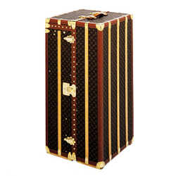 |
|
■ モノグラム・キャンバス100周年記念限定 『セブン・デザイナーズ』コレクション 1996年4月にルイヴィトン・モノグラム誕生100周年を記念した祝典が開催されました。
|
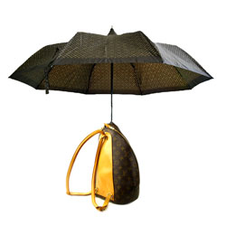 |
 |
 |
 |
 |
 |
 |
 |
 |
 |
| 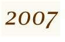 |  |
 |
 |
 |
 |
 |
||
ルイ・ヴィトン・年表
| ルイ・ヴィトン誕生 | |
| わずか14歳でルイ・ヴィトンは故郷のジュラを去り、徒歩でパリに移ることを決意 | |
| 世界初の旅行鞄専門店をパリ、ヌーヴ・デ・カブシーヌ通り4番地に創業 | |
| グリ・トリアノン・キャンバスで覆われた平らなトランクを制作 | |
| 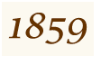 | アニエール＝シュル＝セーヌに最初のアトリエを構える |
| パリ万国博覧会に出典 | |
| 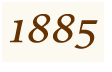 | ロンドンのオックスフォード通りに初のルイ・ヴィトン ストアをオープン |
| “marque L.Vuitton deposee”とプリントされたブラウンとベージュのダミエ・キャンバス誕生 | |
| ルイ・ヴィトン逝去 | |
| ジョルジュ・ヴィトン（2代目当主）によってモノグラム・キャンバスが誕生 | |
| スティーマー・バッグ誕生 | |
| 偽物対策のため、モノグラム・キャンバスの商標登録を行う | |
| 偽物業者が告訴され、フランスで初の実刑判決を受ける | |
| パリのシャンゼリゼ通りに初の路面店をオープン | |
| キーポル誕生 | |
| 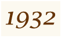 | ノエ誕生 |
| 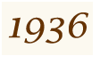 | ジョルジュ・ヴィトン逝去 |
| 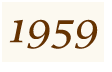 | ソフト・キャンバスの登場 |
| ルイ・ヴィトンストアは2店舗に。年間売上も7,000万フランス・フラン（US＄1,000万）に増加 | |
| 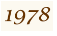 | 日本初のルイ・ヴィトン ストアを東京と大阪にオープン |
| 「アメリカズカップ」の挑戦艇選抜シリーズとして、「ルイ・ヴィトン カップ」がスタート | |
| 韓国初のルイ・ヴィトン ストアをソウルにオープン | |
| エピ・ライン誕生 | |
| モエ・ヘネシーとルイ・ヴィトンの合併により、LVMH モエ ヘネシー・ルイ ヴィトンが誕生 | |
| ルイ・ヴィトンの利益が前年度比49%アップ | |
| 第1回ルイ・ヴィトン クラシック、パリのバガデル公園にて開催 | |
| ルイ・ヴィトン ストア 世界で130店舗に | |
| ルイ・ヴィトン社長にイヴ・カルセルが就任 | |
| 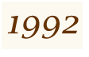 | 中国初のルイ・ヴィトン ストアを北京にオープン |
| タイガ・ライン誕生 | |
| ブック・コレクション「Voyager Avec…」を発刊 | |
| 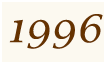 | 世界7都市でモノグラム・キャンバス誕生100周年を祝う
『セブン・デザイナーズ』コレクション発表 |
| ペン・コレクション誕生 | |
| アーティスティック・ディレクターにマークジェイコブスを起用 | |
| モノグラム・ヴェルニ ライン誕生 | |
| ヴィンテージ・カーが大連〜北京間を走破する、ルイ・ヴィトン クラシック、チャイナ・ラン開催 | |
| トラベル・ノートブック発刊 | |
| ルイ・ヴィトン シティ・ガイド発刊 | |
| モノグラム・ミニ ライン誕生 | |
| アフリカ大陸初のルイ・ヴィトン ストアをモロッコの首都 マケラッシュにオープン | |
| シャロン・ストーンがデザインしたヴァニティー・ケース、“ヴァニティ・スター”が、 ヴェニス国際映画祭で開かれたエイズ基金のチャリティー・オークションに登場 | |
| ルイ・ヴィトン初のジュエリー、「チャーム・ブレスレット」をマーク・ジェイコブスがデザイン | |
| アメリカズカップ150周年 | |
| 表参道に初のルイ・ヴィトン ビルをオープン | |
| タンブール ウォッチ・コレクション誕生 | |
| NY出身の舞台美術家、ロバート・ウィルソン氏とのコラボレーションによるクリスマス用ウィンドーディスプレイを発表 | |
| 日本人アーティスト 村上隆氏とのコラボレーションによるモノグラム・マルチカラーライン誕生 | |
| ルイ・ヴィトン カップ20周年 | |
| ユタ・ライン、スハリ・ライン誕生 | |
| ロシア初のルイ・ヴィトンストアをモスクワにオープン | |
| インド初のルイ・ヴィトンストアをニュー・デリにオープン | |
| ルイ・ヴィトン創業150周年 | |
| ニューヨークのフィフス・アベニューに2つ目のルイ・ヴィトン ビルをオープン | |
| 中国初のルイ・ヴィトン グローバル・ストアを上海にオープン | |
| 南アフリカ初のルイ・ヴィトン ストアをヨハネスブルグにオープン | |
| スイス人アーティスト、ウーゴ・ロンディノーネ氏によるクリスマス用ウィンドー・ディスプレイを発表 | |
| 初のジュエリー・コレクション、アンプリーズ誕生 | |
| ダミエ・ジェアン ライン誕生 | |
| スピーディ ウォッチ・コレクション誕生 | |
| メゾン ルイ・ヴィトンをシャンゼリゼ（パリ）にリニューアルオープン | |
| シャンゼリゼ（パリ）のメゾン ルイ・ヴィトンの７階にエスパス ルイ・ヴィトンをオープン | |
| 往年の定番バッグを蘇らせた新アイコン「ロックイット」がノマド・ラインより登場 | |
| Assouline社より「Louis Vuitton-アイコン-」ブック出版 | |
| ブダペスト、ウィーン、プラハ間でクラシック・カーレース、ルイ・ヴィトン クラシック ポエム・ラン開催 | |
| モノグラム・ミニ・ラン ライン誕生 | |
| ニューヨークのフィフス・アベニューと台湾にメゾン ルイ・ヴィトンをオープン | |
| ダミエ・アズール シリーズ誕生 | |
| デンマークのアーティスト、オラファー・エリアソンによるクリスマス用ウィンドウ・ディスプレイを展開 | |
| ロサンゼルス現代美術館(MOCA)にて村上隆氏のエキシビジョンMURAKAMI開催 | |
| リチャード・プリンスとマーク・ジェイコブス、初のコラボレーション | |
| ファッションエディターのリサ・アームストロングとのコラボレーション「アルティメット・トラベル・バッグ」発表 | |
| 2007年コア・ヴァリュー広告キャンペーンにカトリーヌ・ドヌーヴ、ミハイル・ゴルバチョフ、シュテテフィ・グラフ＆アンドレ・アガシが登場 | |
| キプロス共和国に初のルイ・ヴィトンストアをオープン | |
| 香港の広東ロードにルイ・ヴィトンストアがオープン | |
| 2008年コア・ヴァリュー広告キャンペーンにキース・リチャーズ、フランシス・フォード・コッポラ＆ソフィア・コッポラ、ショーン・コネリーが登場 | |
| ダミエ・グラフィットライン誕生 | |
| 10周年記念ルイ･ヴィトン シティ・ガイドが発売 | |
| ソフィア・コッポラ＆ルイ・ヴィトンコレクションが東京を皮切りに展開 | |
| ニューヨークでアーティスト兼デザイナーとして一世風靡したスティーブン・スプラウスをトリビュートしたコレクションが登場 | |
| ニュージーランドのオークランドでルイ・ヴィトン パシフィック・シリーズ開催 | |
| ビルパオ（スペイン）のグッゲンハイム美術館にて村上隆氏のエキシビション MURAKAMIを開催 | |
| FIFAの依頼によりワールドカップトロフィー専用トラベルケースを制作。南アフリカ大会決勝戦にて披露された。 | |
| ルイ・ヴィトン コア・ヴァリュー広告キャンペーンで「サッカーの神様」ペレ、マラドーナ、ジダンが夢の競演 | |